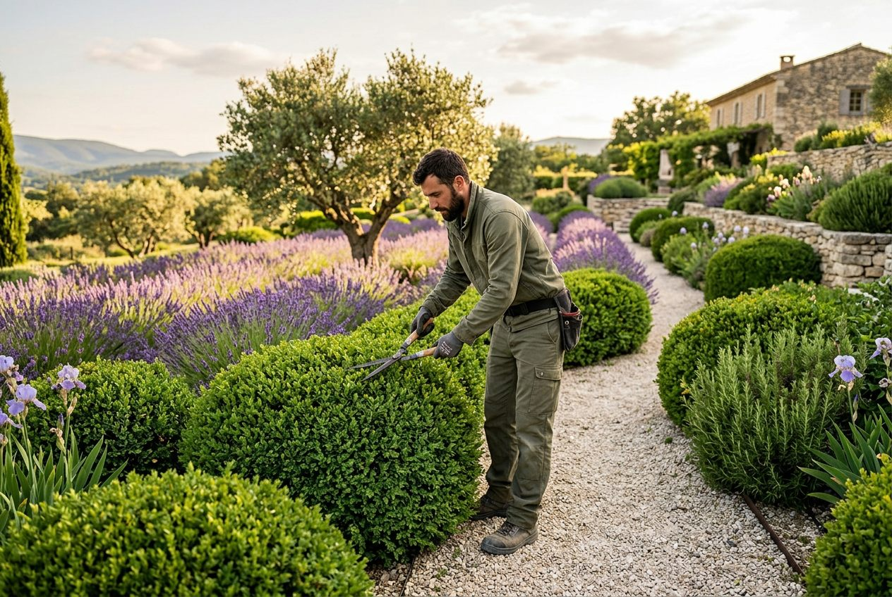

Paysagiste · Aix-en-Provence
Création de jardins méditerranéens, entretien à l'année, arrosage raisonné. Des extérieurs beaux en toute saison — et sobres en eau.
Prestations
Conception sur plan, terrassement, plantations d'essences méditerranéennes, éclairage extérieur.
Étude et croquis offertsTonte, taille, désherbage, soins des massifs : contrat mensuel, jardin impeccable toute l'année.
Dès 89 €/mois — soit 44,50 € après crédit d'impôtGoutte-à-goutte et programmateurs connectés : moins d'eau, des plantes en meilleure santé.
Installation dès 690 €Pierre naturelle, bois, gravier stabilisé : des extérieurs à vivre, posés dans les règles de l'art.
Sur devis — chiffrage sous 72 hOliviers, fruitiers, haies : tailles respectueuses des saisons et de la santé de l'arbre.
Olivier taillé dès 75 €Carrés potagers, plantation de fruitiers, conseils de culture : mangez votre jardin.
Carré potager installé dès 240 €Notre approche
Un jardin provençal n'est pas une pelouse anglaise sous perfusion. Nous composons avec le climat — essences locales, paillage, arrosage raisonné — pour des jardins qui traversent l'été sans souffrir, et des factures d'eau qui restent douces.
Avis clients
« Jardin créé de zéro autour de notre piscine : deux ans après, c'est encore plus beau que le plan. Arrosage réglé au millimètre. »
Hélène et Marc — Aix, Les Pinchinats« Contrat d'entretien depuis trois ans. Équipe fiable, ponctuelle, de bon conseil. Et le crédit d'impôt simplifie tout. »
Jacques R. — Éguilles« Nos trois oliviers centenaires taillés avec un respect rare. On sent le métier et l'amour des arbres. »
Famille Blanc — VenellesContact
Zone d'intervention :